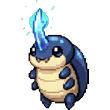

 ElectricBug
ElectricBugTap a stage to read its story.
This Sparkbug wears a dark rounded shell and stands out in Storm Spire by the single vivid blue crystal spike that rises from its head like a tiny beacon. The crystal glows faintly and pulses with each step it takes, as though counting. It rolls beetle-style through the dense undergrowth of Storm Spire, following the underground water channels by the faint electrical resonance they carry. Young ones are found near the spire's crystal-veined stones, tapping their crystal horn against the rock to hear it ring - a sound they seem to find deeply satisfying.
Field note: Sparkbug taps its crystal horn against rocks to test their mineral content - it eats only the rocks that ring in a specific tone.
Verdant Valley. Sparkbug and its family are found in the Verdant Valley. See everyone who lives there.
Share a Bond Food that matches its types to become friends. Sparkbug loves:
A Bond Food is not a trick. It joins your spirit with the Kimuro's spirit, and only when it chooses you.
Print the Kimuro adventure packs: mazes, cards, a board game and Bond Mark medals.
See the printable packs